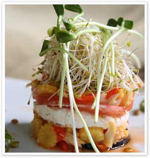

Platos calientes: alimentos saludables | Cocina
2021.06.26 11:31
Acceder tu portada
Si quieres añadir o quitar temas haz clic en el siguiente botón:
modificar mi portada ideas guardadas Más ideas de Cocina todos Sin gluten Postres y dulces Entrantes Cenas Arroces y platos de cuchara Recetas veganas y vegetarianas Cocina europea Recetas españolas Cocina oriental Recetas latinas Ensaladas Recetas fáciles y rápidas Para táper Recetas sanas Carne y pescado Recetas de pasta Actualidad Decoración Bricolaje Manualidades Cocina Mascotas Plantas Salud Belleza Padres Bodas Entretenimiento Tecnología Ecología Todo facilisimo Red facilisimo Aprender en directo ideas cocina comunidades Cocineraymadre Idea guardada 12 veces La valoración media de 8 personas es: Muy buenaAprende nuevas recetas de platos calientes
Hoy os ofrecemos Verduras en Cuchara es decir una pequeña selección de platos calientes para comer con cuchara, guisos, sopas, cremas, potajes…9 buenas recetas para los amantes de las verduras y para los que no lo son tanto, ya que si los probáis seguro que os encantan estos platos calientes .
Como ya sabréis todos es necesario comer 5 raciones de verduras y frutas al día, en una dieta equilibrada y saludable ya que nos aportan minerales, vitaminas y aminoácidos esenciales para nuestro organismo. Si que ya tenéis una razón más para disfrutar con estas elaboraciones que os presentamos a continuación gracias a la colaboración de mis compañer@s y de una servidora desde mi blog Cocinera y Madre.
Platos calientes de verdura para comer con cuchara.
Porrusalda o guiso de puerros y patatas.
Con un sabor suave apto para todos los gustos, en mi casa es un plato que se come habitualmente y nos gusta a todos.
Un plato sencillo, económico y saludable. Muy tradicional de la zona norte de España que seguro que te ayudará a entrar e calor en estos días de frió.
La receta la puedes encontrar en mi blog Cocinera y Madre al igual que otras recetas de interés y demás más información y curiosidades gastronómicas y de alimentación en general.
Crema de champiñones al ajillo.
Esta receta no es nada convencional, va mucho más allá de una sencilla crema de champiñones tiene un toque picante, crujiente y delicioso que la hace irresistible y su autor dice que asta es afrodisíaca. Tendréis que probarla y ver los efectos que causa en vosotros. ¿Ya nos contaréis? Es una receta del blog Cocina familiar.
Sopa de hortalizas y lentejas con arroz.
Nos encantan las recetas en las que nos enseñan a aprovechar esos restos que han ido quedando en el frigorífico, y que podemos usar para hacer un buen potaje como este.
Un plato contundente perfecto para esta época además de saludable y rico. Nos deja la receta Dolors del Blog de Cuina.
Crema de brécol con cúrcuma .
Esta es una elaboración de La Rosa dulce donde da una vuelta de tuerca a una receta un tanto insípida y apta para enfermos convirtiéndola en “una delicia para tomar bien calentita” como dice la autora. Entra en su blog y descubre un montón de recetas tanto dulces como saladas.
Patatas a la riojana.
Este es el plato riojano por excelencia. Lo esencial de este plato son las patatas y el chorizo y el resultado es un guiso estupendo que nos encanta a todos. Económico y fácil de hacer para que no tengas excusas para hacerlo en casa. Nos dejan la receta desde la Web Recetas de Casa .
Sopa minestrone .
Un clásico de la cocina internacional con la combinación de verduras y pasta. Un potaje perfecto para los más peques de la casa, bueno y también para los mayores, je je… que seguro que os encanta, además el toque del queso lo hace más apetecible aun. Una receta Chismes y cacharros.
Sopa de espárragos con huevo.
Personalmente soy una amante de los espárragos, me encantan de cualquier forma además tenemos la ventaja de que podemos consumirlos embotados a lo largo de todo el año. Os diré que es muy saludable y diuréticos por lo que son perfectos para las dietas. Vamos que me encanta esta receta que nos deja Pilar en su blog Per sucar hi pa.
Crema de ajo con panceta ahumada .
Va que buena, que pintaza! Seguro que ya estáis salivando como yo. No os asustéis por que lleve ajo es una crema suave pero muy contundente con el aroma ahumado de la panceta. La receta es del blog Pa mojar pan . Entrad y echad un vistazo por que no tiene desperdicio.
Sopa de lechuga .
Aunque quizás os suene un poco extraño a algunos os diré que la sopa de lechuga es un clásico en muchos países, sobre todo escandinavos. Y es que esta verdura da mucho juego y resulta deliciosa en guisos y sopas. Os animo a que la probéis para empezar con este guiso tan estupendo que encontramos en la Web Me sabe a Málaga , seguro que os sorprende y repetiréis.
Bueno espero que os haya gustado y animaros a que visitéis mi blog Cocinera y Madre donde encontrareis más recetas ricas y saludables.
Si os ha gustado este articulo compartir por las redes sociales.
Muchas gracias.
¿Vulnera este post tus derechos? Pincha aquí . Modificado: 21/01/2021 16:01 ¿Qué te ha parecido esta idea? Excelente Muy buena Buena Normal Mala
Esta idea proviene de:
Cocineraymadre http://cocineraymadre.com/Y estas son sus últimas ideas publicadas:
Cocineraymadre Natillas de naranja caseras y fácilesVídeo receta; natillas de naranja caseras y fáciles: Natillas de naranja caseras y fáciles Dificultad: fácil Raciones: 4 6 Tiempo: 20 minutos Sin gluten Ing
Cocineraymadre Gazpacho de remolacha muy fácilVídeo receta; gazpacho de remolacha muy fácil: Gazpacho de remolacha muy fácil Dificultad: muy fácil Raciones: 4 6 vasos Tiempo: 5 minutos Ingredientes: 500 gr de
Cocineraymadre Postre de crema de mango fácil y deliciosoVídeo receta; postre de crema de mango fácil y delicioso: Postre de crema de mango fácil y delicioso Dificultad: muy fácil Raciones: 6 8 vasos o copas Tiempo: 10 minu
Cocineraymadre Ensalada de pasta y pollo fácilVídeo receta; ensalada de pasta y pollo fácil: Ensalada de pasta y pollo fácil Dificultad: fácil Raciones: 4 personas Tiempo: 20 minutos Ingredientes: 150 gr de pasta en seco
Etiquetas: recetas verduras platos de cuchara platos calientes cremas guisos sopas recetas de primerosRecomendamos
Relacionado
Cocineraymadre recetas tradicionales pan post colaborativo sopas cuchara recetas económicas recetas de primeros Sopas tradicionales a base de pan, sencillas, económicas y reconstituyentesSaludos queridos amigos cocineros! Un buen plato de sopa de pan es una solución perfecta como primer plato en una comida o una cena, son fáciles de hacer, muy económicas y además están buenísimas.Con estas 4 recetas tradicionales, casera y muy populares seguro que entraréis en calor y os servirá de forma excelente para continuar con nuestra vida cotidiana. Todas las recetas están hechas a base de
Cocineraymadre patatas primeros recetas post colaborativo platos de cuchara caseros recetas de primeros Platos de cuchara para todos los díasNo hay nada como la comida de casa, la de toda la vida, esos guisos y platos de cuchara que nos dan energía para afrontar el duro día de trabajo, que nos hacían nuestras abuelas y nuestras madres y que parece que hoy en día los hemos abandonado un poco y que además de son económicos cosa que es muy importante en el momento actual, además están buenísimos y nos aportan los hidratos de carbono neces
Cocineraymadre ensaladas verduras recetas primeros platos frios post colaborativo recetas de primeros Lleva el sabor y el frescor a tu mesa con estas 4 recetas de ensaladas 2ª ParteEstas recetas de ensaladas son ideales para cuando llega la temporada caliente y con él las comidas más fresquitas, menos pesadas y sanas y por supuesto las que nos ayudan a cuidarnos un poco más ya que empezamos a lucir cuerpo. Una buena ensalada es el acompañante perfecto para cualquier plato, carne, pescado, pasta, o un plato principal delicioso o incluso la cena ligera perfecta para cualquie
Cocineraymadre receta cuchara primeros patatas recetas de primeros Platos de cuchara donde la protagonista es la PATATADentro de nada comienza el otoño y empieza hacer frío por eso parece que apetecen más los platos calientes que tanto nos reconfortan en esta época del año. Con esa idea os quiero mostrar unas recetas de platos de cuchara con patatas, ya que estas son muy económicas y después de todos los gastos estrás de las vacaciones y de la vuelta al cole son ideas que vienen muy bien para nuestros bolsillos, a
Cocineraymadre primeros platos recetas sencillas recetas económicas recetas baratas recetas caseras Primeros platos económicos para el día a díaHola chicas y chicos! amigos de la buena cocina hoy les traigo unas deliciosas recetas para platos económicos. Si quieres comer bien y barato no te puedes perder estas recetas para platos económicos, son recetas muy sencillas de preparar y además te van ayudar ahorrar un poquito, cosa que hoy en día viene muy bien. Esta claro que hay que comer todos los días y que a veces pues hay que mirar un poc
La Cocina de Pedro y Yolanda primeros platos platos de cuchara legumbres Sabrosos platos de cuchara con fundamentoLlevamos desde antes de que empezara el verano dando ideas y preparando platos y postres fríos. Es hora de que empecemos de nuevo con el cuchareo con ideas de Exquisitos platos de cuchara. . Ya va apeteciendo estos exquisitos platos de cuchara y son todo un placer. Además, muchos de los platos de cuchara incluyen legumbres como ingrediente principal. Ello va a reportar a nuestro organismo muchos b
Cocineraymadre magdalenas dulces tradicionales postres post colaborativo recetas postres Magdalenas para todos, caseras y muy esponjosasComo os gustan las magdalenas, estos pequeños bizcochitos de origen francés, pero que hoy en día están instaurados en todos los hogares españoles y de latino américa. Y es que son una idea perfecta para el desayuno, la merienda o para acompañar el café o incluso para esas personas como yo y tu, ¿quizás? que nos levantamos por la noche con gusa y nos da por comer este dulce manjar. Y es
Cocineraymadre primeros platos verdura recetas caseras post colaborativo cocina sana 6 delciosos platos de verduraHola chicas! les traigo unas deliciosas recetas de platos de verduras sencillas recetas culinarias. Los platos de verdura deberían de ser un imprescindible en nuestra comida diaria, base fundamental de la dieta mediterránea y una fuente inagotable de vitaminas, minerales, fibras, y micronutrientes. Las recetas de platos de verdura son la base de infinidad de elaboraciones y por si solas pueden ser
Cocineraymadre cocina internacional primeros platos legumbres platos de cuchara 6 recetas de platos de cuchara hechos con legumbresPlatos de cuchara hechos con legumbres Las legumbres son uno de los alimentos comunes en todas las culturas del mundo, en todas ellas con elaboraciones muy diferentes pero en cualquier caso se consumen desde hace muchísimo tiempo y son uno de los productos más completo ya que nos aportan hidratos de carbono, proteínas, fibra, vitaminas y minerales, todo a un bajo coste. Platos de cuchara hechos c
Anna Recetas Fáciles primeros platos 4 recetas de cucharaHola chicas y chicos! hoy les traigo unas deliciosas y fáciles recetas de sopas. Los potajes y sopas son una excelente forma de hacer que el cuerpo entre en calor. Hoy he recopilado 4 recetas de sopas muy fáciles, pero lo más reconfortantes para que te sirvan de inspiración cuando te apetezca un buen plato de cuchara apetitoso a la vez que sencillo. Te aseguro que este recopilatorio de recetas de
Las mejores ideas Dr. Oetker Recetas con levadura: la textura perfecta Blog de filomena Trucos para hacer un pollo al horno perfecto Cocina con Olaya y Pelayo Vichysoisse (crema francesa de ajo puerro y patata SIN Thermomix) LAS DELICIAS DE MAYTE Cómo hacer volovanes, canutillos y cucharas de hojaldre para rellenar con dulce o salado Javier Romero: recetas de cocina familiar Si no sabes cómo cocinar la berenjena, aquí te dejamos 5 ideas distintas Por amor al horno Panecillos de leche extra tiernos Cocinando Los Domingos 6 recetas sorprendentes de lasaña Cocinando con Jenny recetas fáciles Bizcocho de vainilla y yogur: tierno, suave y bien aromatizado Cocinando a fuego lento Guiso de verduras Vivienda Saludable Trucos para conservar la fruta y la verdura Ajetes.com Las reinas de la cocina tradicional: las croquetas caseras. Aquí, 6 recetas distintas Anna Recetas Fáciles No uses solo el pan de molde para hacer sándwiches: mire qué recetas puedes preparar con él Anna Recetas Fáciles 5 recetas de pollo para impresionar Cocineraymadre Ya no tienes excusa: paso a paso muy completo para hacer masa de pizza casera Saltando la dieta Mousse fácil de limón con 3 ingredientes La Cocina de Enloqui en facilísimo Mini pizzas en obleas de empanadillas ¡Fácil y sabroso! Las recetas de Midori Cómo hacer pan de molde SIN amasar Something is cooking Prepara unas galletas riquísimas con solo 3 ingredientes Soy Bea Tacos de atún sencillos y ricos a partes iguales AliExpress AliExpress te facilita tus tareas en la cocina ¡con descuentos de hasta el 70%! La cocina de Merche Borjas Banda de hojaldre con crema pastelera y frutas: tienes que probarla sí o sí Something is cooking Bizcocho de avena con 3 ingredientes y sin azúcar Recetas por un tubo Guacamole con nachos o totopos caseros Recetas que funcionan Bizcocho esponjoso básico sin levadura, aceite ni lacteos Blog de cocinandojuntos Flan de turrón casero sin horno. ¡Ya tienes el postre para las fiestas navideñas! Cocina para pobres Cómo hacer galletas de avena y zanahoria Anna Recetas Fáciles Entrantes fríos, ¡ideales para una reunión informal! Blog de yolandabarber Refrescantes y completas ensaladas para verano Ideas que mejoran tu vida, S.L. Todos los derechos reservados. Publicidad Contactar Aviso legal